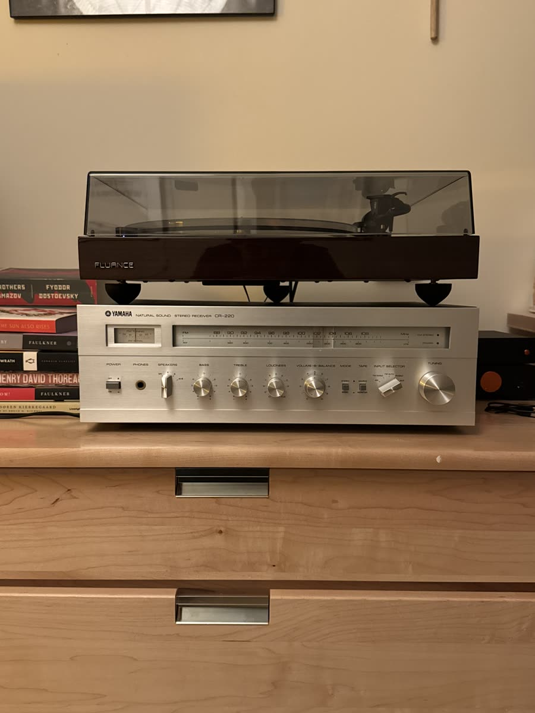
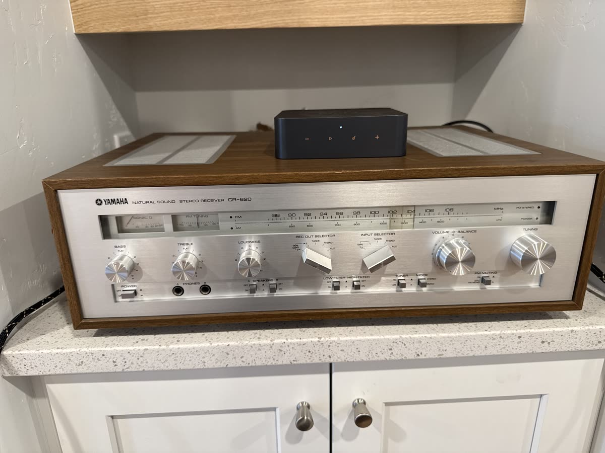
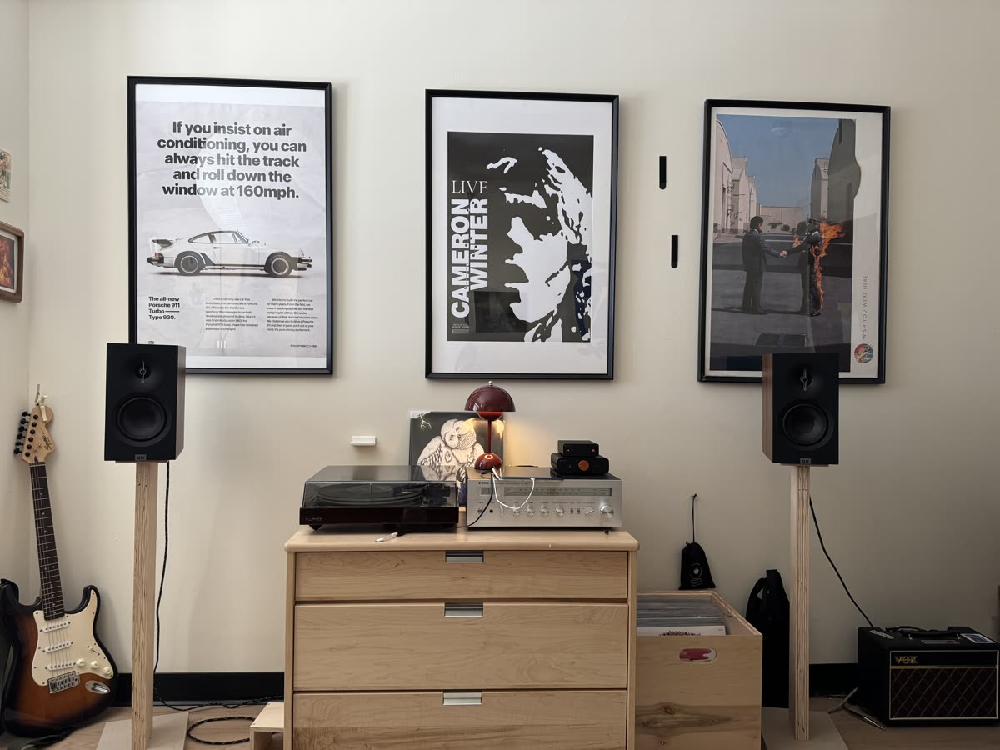
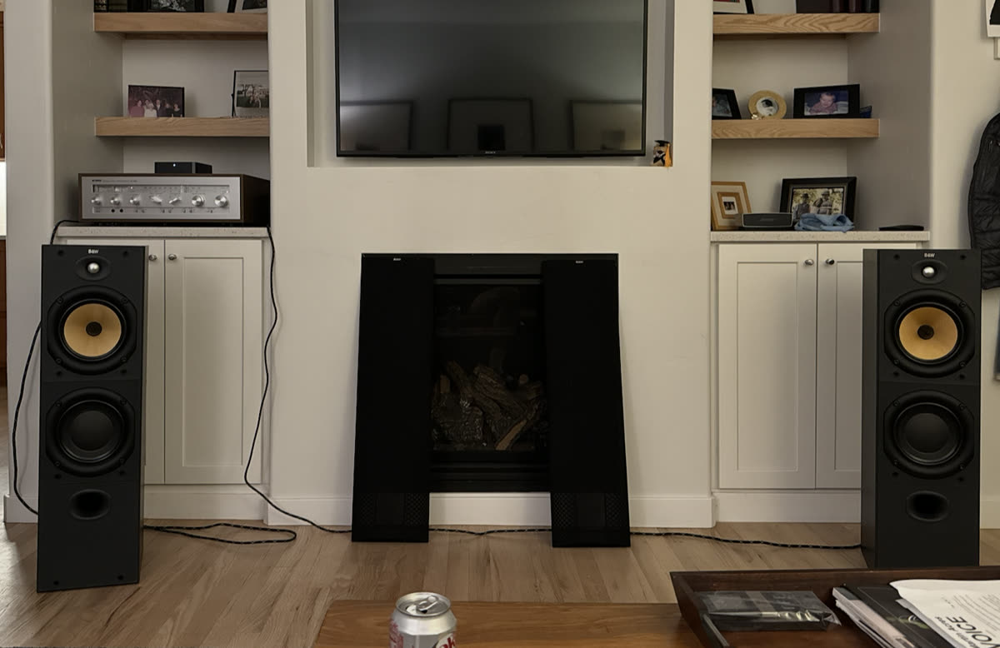
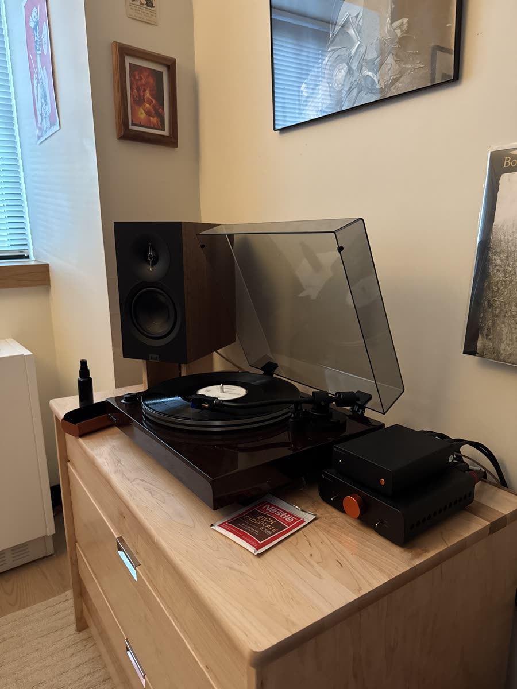
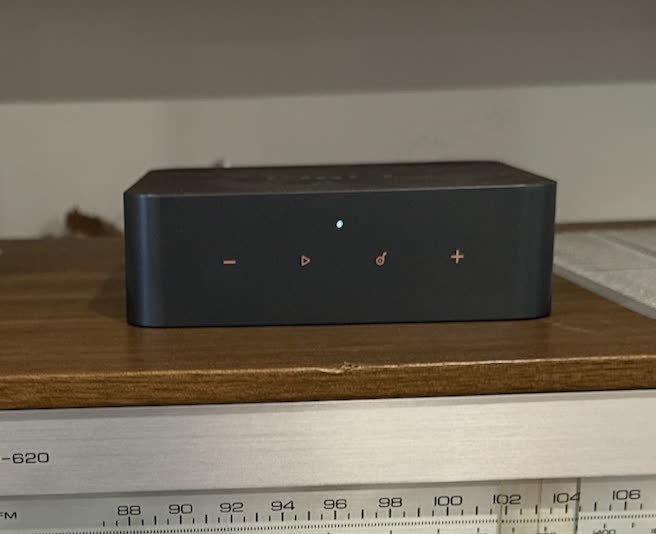
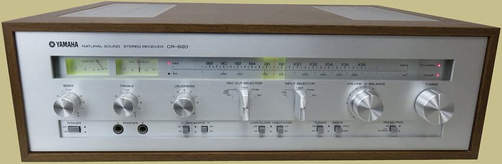
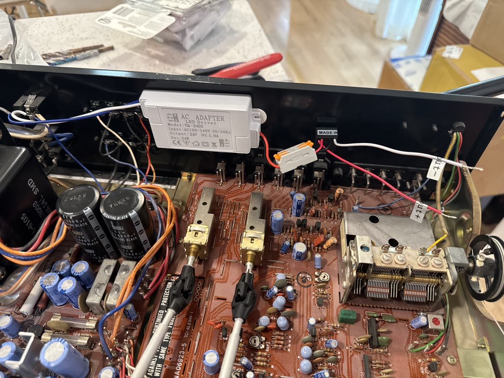
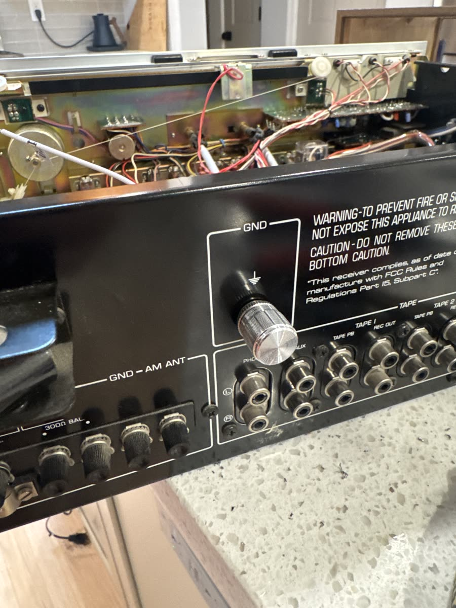
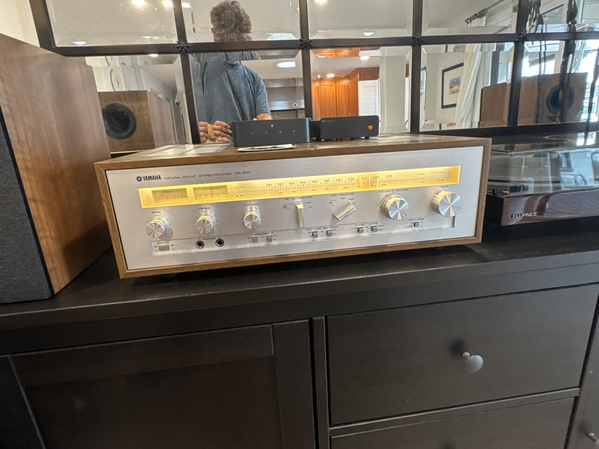

HiFi
In fall of 2025 I began to challenge myself to listen to music with no distractions. Instead of putting it on in the background while I work, I wanted listening to be the only activity I was doing, like watching a movie. With this came the desire for higher fidelity audio, and the desire to own physical copies of the music that I like.
Amps
I started with a small class D amp, the Fosi ZA3. It was a good price and conveniently small, but it lacked character. I found a Yamaha CR-220 on Facebook Marketplace for a good price because the seller thought it was broken. I put some DeoxIT in the contacts, and it sounded great. Warmer than the Fosi, and aesthetically way better.
A while later I stumbled upon a Yamaha CR-620, also on Marketplace, that I couldn’t pass up. When I got it home the left channel was dead; also fixed with DeoxIT.


Speakers
I use a set of Elac Debut DB53 which I got new. I love the look of them and they are great for small to mid-sized rooms. Super precise, and I find I don’t need a sub with them.
I also have a set of Bowers & Wilkins DM603 S2 which I got from the same Marketplace listing as the Yamaha CR-620. Although these are almost 30 years older than the Elacs, they’re a step up, which is expected with the much larger size and MSRP.


Sources
I use a Fluance RT85 turntable with the Ortofon 2M Blue cartridge into the Fosi Audiobox x5 for vinyl, or the Wiim Pro streamer to stream from Spotify. I really love putting on a record, but I can’t afford to own everything on vinyl.


Upgrading the lights in my Yamaha CR-620
The lights were burned out when I bought the CR-620, and I didn’t want to just replace them. I wanted something brighter and warmer.

I bought 3mm wide 24v COB lights, an AC adapter, and a dimmer switch.
I soldered the input end of the AC adapter onto the inside of the switched outlet on the amp so that it would be powered with the amp’s power button. The output of the adapter went into the dimmer switch so that I can adjust the brightness of the lights or turn them off. I mounted the switch to the case of the amp by drilling out the amp’s ground mount. I figured I can use the switch as the ground if I ever need to. Finally, I installed the lights between the glass front of the case and the dial to light the entire space instead of just the indicator.


